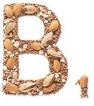
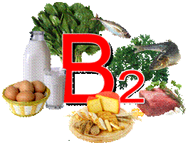
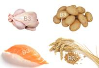
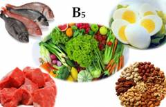
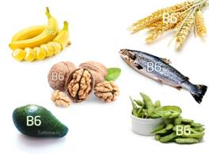
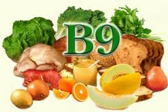
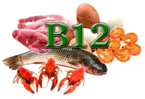
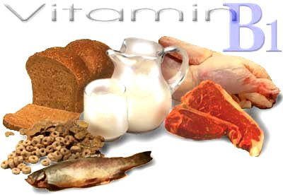

Вітаміни. Вітаміни групи В. Частина І
Вітаміни групи В (Рибофлавін) активізують розумову діяльність, підвищують працездатність, регулюють вуглеводний обмін і водний баланс, забезпечують нормальне функціонування нервової та серцево-судинної систем, сприяють покращенню стану шкіри, підтримують зір.
Вітамін B відноситься до ряду водорозчинних вітамінів і відіграє ключову роль у забезпеченні нормального функціонування мозку і нервової системи, а також формування крові. Вітамін В, як правило, бере участь у метаболізмі кожної клітини людського організму, особливо це стосується синтезу та регулювання ДНК, а також синтезу жирних кислот і виробництва енергії.
Найбільш поширеними формами вітаміну групи В є:
-

Вітамін B1 допомагає оптимізації пізнавальної активності, має позитивний вплив на зростання, рівень енергії, нормалізує апетит, є необхідним для тонусу м’язів шлунково-кишкового тракту і серця.
-

Вітамін B2 захищає сітківку ока від дії УФ-променів, відповідає за виробництво в організмі гормонів стресу і нормальної діяльності нервової системи, допомагає перетворювати в енергію жири і вуглеводи.
-

Вітамін B3 є необхідним при м’язовій слабкості, шкірних хворобах, головних болях, поганому сні та неуважності, а також при депресивних станах.
-

Вітамін B5 бере участь у процесах ацетилювання та окислення. Дуже важливий для обміну і синтезу багатьох речовин.
-

Вітамін B6 виконує в організмі безліч функцій, основна з яких – забезпечення правильної переробки амінокислот.
-

Вітамін B7 містить сірку, бере участь у синтезі колагену, відповідального за еластичність шкіри, сухожиль, кісток і хрящів.
Вітамін B9 позитивно впливає на роботу шлунково-кишкового тракту, бере участь у різних ферментних реакціях, в обміні амінокислот, біосинтезі піримідинових і пуринових. Важливий для правильного перебігу процесів розвитку і росту тканин. -

Вітамін B12 запобігає появі анемії, збільшує енергію, покращує концентрацію і пам’ять, підтримує нервову систему.
Всі знають, що вітамін B важливий, інакше про нього стільки не говорили б. Але який вплив має цей вітамін на організм?
- Підтримку і збільшення швидкості обміну речовин.
- Підтримання здоров’я шкіри, волосся і м’язового тонусу.
- Підвищення функцій імунної та нервової системи.
- Сприяння зростанню і діленню клітин, в тому числі червоних кров’яних тілець, що допомагають запобігти анемію.
- Зниження ризику розвитку раку підшлункової залози – однієї з найбільш небезпечних форм раку – при природному споживанні вітаміну.
- Встановлено, що деякі вітаміни групи В захищають наш мозок. Фолієва кислота, вітамін В6 і В12 контролюють рівень гомоцистеїну в крові, високий рівень якого пов’язаний з більш швидкою усадкою мозку і хворобою Альцгеймера.
Кращі харчові джерела вітамінів групи В, особливо вітаміну В12, це: продукти тваринного походження (м’ясо, птиця), дріжджові екстракти, спаржа, броколі, шпинат, банани, картопля, курага, фініки та інжир, молоко, яйця, сир, йогурт, горіхи і боби, риб, коричневий рис, паростки пшениці, цільнозернові злаки, горіхи, насіння, авокадо. Вітамін В6 міститься в квасолі, грецьких горіхах, пивних дріжджах, яєчних жовтках, моркві, капусті, картоплі.
Вітамін В1 (Тіамін) водорозчинний вітамін, який відіграє важливу роль у метаболізмі. Тіамін бере активну участь у багатьох метаболічних процесах і має вплив на роботу практично кожної клітини організму. Особливо тіамін важливий для підтримки нормальної діяльності нервової системи. Якщо вітамін надходить до організму у недостатній кількості, то порушується синтез медіатора ацетилхоліну, що, у результаті, призводить до порушення функцій нервової, серцево-судинної, травної та ендокринної систем.
параграф другого рівня
Вітамін В1 необхідний і для нормальної мозкової діяльності, так як він нормалізує мозковий кровообіг, підвищує здатність людини до навчання, а крім того, бере участь у процесах кровотворення. Також тіамін має й антиоксидантні властивості. Цей вітамін зменшує негативний вплив алкоголю і тютюну, захищає організм від інфекційних агентів та уповільнює процеси старіння.
Вітамін В1 необхідний і для нормальної мозкової діяльності, так як він нормалізує мозковий кровообіг, підвищує здатність людини до навчання, а крім того, бере участь у процесах кровотворення. Також тіамін має й антиоксидантні властивості. Цей вітамін зменшує негативний вплив алкоголю і тютюну, захищає організм від інфекційних агентів та уповільнює процеси старіння. копія
Симптоми при дефіциті тіаміну
Передозування вітаміном В1 практично неможливе, а його дефіцит призводить до тяжких порушень. Так як тіамін бере участь у багатьох фізіологічних процесах в організмі, то його недостача може проявлятися безліччю різних симптомів, серед яких виокремлюють:
- втома;
- підвищена стомлюваність;
- дратівливість;
- плаксивість;
- поганий настрій, депресія;
- поганий апетит;
- нудота;
- погана координація;
- задишка навіть при невеликих фізичних навантаженнях
- діарея та інші шлунково-кишкові розлади;
- хвороба бери-бери-важке захворювання,яке на сьогоднішній день зустрічається досить рідко
Добова потреба в тіаміні
Добова потреба в тіаміні для дорослого чоловіка становить 1,2 міліграма, а для жінки – 1,1 міліграм. Підвищені дозування вітаміну В1 необхідні людям з підвищеною функцією щитовидної залози, а також при занадто високих фізичних навантаженнях, щоб забезпечити повною мірою всі потреби організму в умовах підвищених фізичних навантажень .
Продукти, що містять тіамін
На щастя, вітамін В1 міститься в багатьох рослинних і тваринних продуктах, тому при повноцінному харчуванні у здорової людини не повинен розвиватися його дефіцит.
Джерела тіаміну рослинного походження: пшениця, насіння соняшника, нешліфований рис, гречка, квасоля, горох, сочевиця, боби, волоські горіхи, вівсяна крупа, морква, шипшина, картопля, смородина, м’ята, шпинат, щавель, родзинки, слива, суниця, зелень, апельсини.
Джерела тіаміну тваринного походження: яловичина, свинина, печінка, серце, нирки, мозок, риба і морепродукти, яйця (яєчний жовток), молоко і молочні продукти.
Джерела тіаміну тваринного походження: яловичина, свинина, печінка, серце, нирки, мозок, риба і морепродукти, яйця (яєчний жовток), молоко і молочні продукти.
Джерела тіаміну тваринного походження: яловичина, свинина, печінка, серце, нирки, мозок, риба і морепродукти, яйця (яєчний жовток), молоко і молочні продукти.